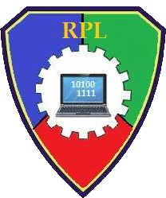

Penjelasan RPL

Rekayasa Perangkat Lunakatau biasa disingkat dengan RPL adalah salah satu bidang profesi dan juga mata pelajaran yang mempelajari tentang pengembangan
perangkat-perangkat lunak termasuk dalam hal pembuatannya, pemeliharaan hingga Management Organitation dan Management Quality.
Bisa dikatakan RPL ini merupakan subuah perubahan yang terjadi pada perangkat lunak guna melakukan pengembangan,
pemeliharaan dan pembangunan kembali dengan menerapkan prinsip rekayasa sehingga memperoleh perangkat lunak yang bisa bekerja secara lebih
efesien dan efektif pada Web nantinya.
Kembali Kehalaman Utama